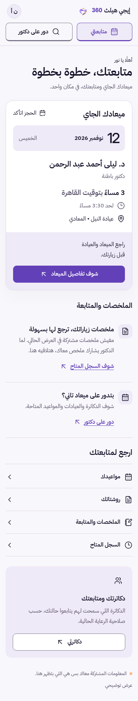
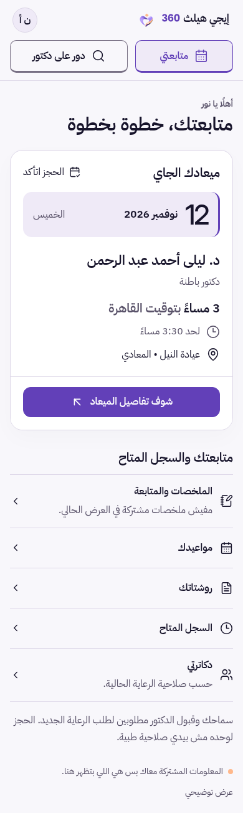

Review controls are outside the product. Appearance selection is not a product default or persistence decision. AP03 platform and AP05 artwork rights remain open.
ONE BOUNDED REFINEMENT
Less repetition. Context within reach.
Actual browser PNGs, matched by role, language, appearance and viewport. Original baseline screenshots remain byte-identical. Open an image to inspect it at full size.


MATCHED COMPARISON
Two appearances. One product.
Same role, language, viewport and text setting. Scroll horizontally to inspect large pairs, or open each full screen.
Browser screenshots
PNG files open directly, including on Android. These are actual Chromium captures; see QA.md for measured limits.